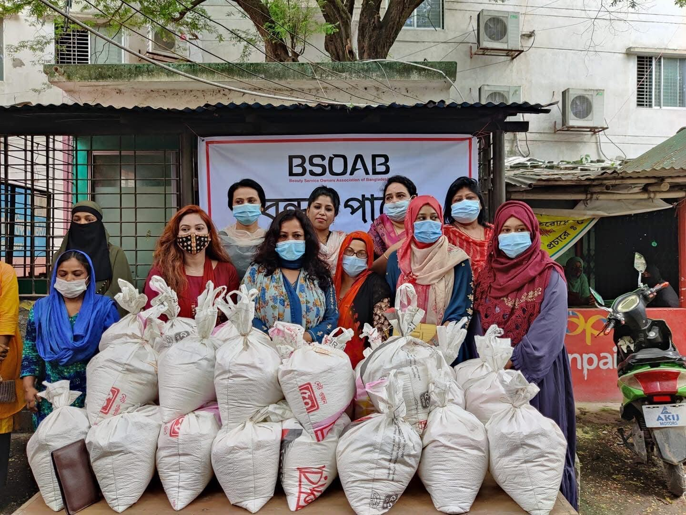
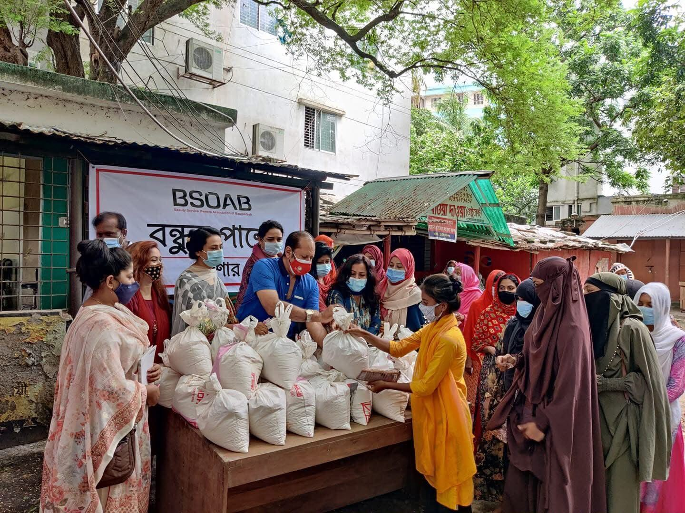
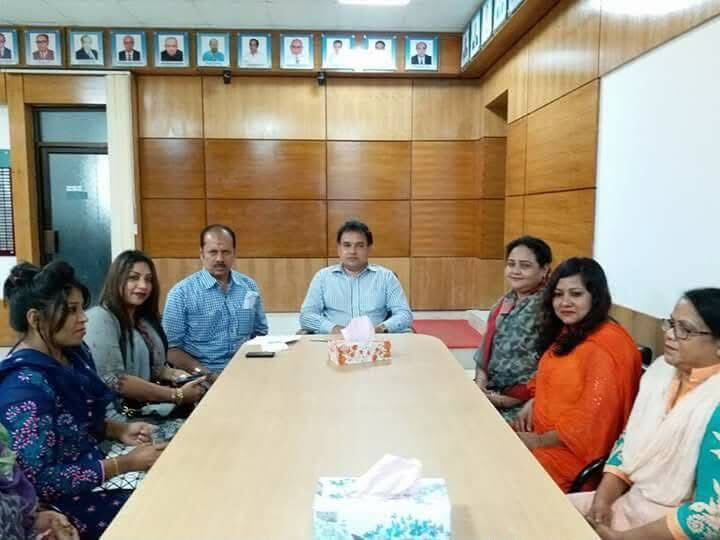
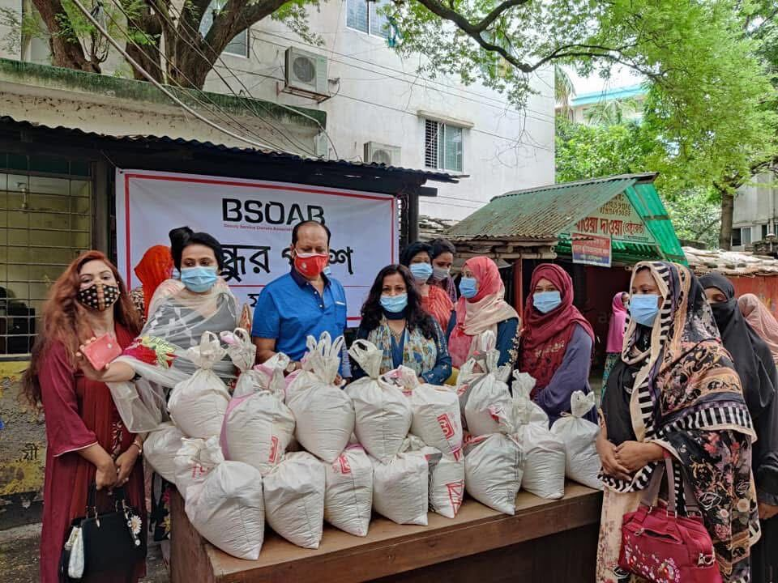

মানুষের পাশে দাঁড়ানোই আমাদের কাজ
যশোরের প্রান্তিক জনগোষ্ঠীর পাশে ত্রাণ, সহায়তা ও সংগঠনের মাধ্যমে আমরা কাজ করি — প্রতিটি সংকটে, প্রতিটি ঋতুতে, নিরবচ্ছিন্নভাবে।
সহমর্মিতা থেকে কাজ, কাজ থেকে পরিবর্তন
যশোর ডোজ (ডেভেলপমেন্ট অরগানাইজেশান সোসাইটি) স্থানীয় স্বেচ্ছাসেবক ও সংগঠকদের নিয়ে গড়ে ওঠা একটি সমাজকল্যাণমূলক সংস্থা। প্রাকৃতিক দুর্যোগ, মহামারি কিংবা মৌসুমি সংকটে আমরা খাদ্য, নিত্যপ্রয়োজনীয় সামগ্রী ও মানসিক সহায়তা নিয়ে মানুষের পাশে দাঁড়াই — বিশেষ করে নারী ও প্রান্তিক পরিবারগুলোর কাছে।
ত্রাণ ও খাদ্য সহায়তা
সংকটকালে পরিবারপ্রতি চাল, ডাল ও নিত্যপ্রয়োজনীয় সামগ্রী পৌঁছে দেওয়া।
নারীকেন্দ্রিক উদ্যোগ
নারী নেতৃত্বাধীন পরিবার ও ক্ষুদ্র পেশাজীবীদের পাশে দাঁড়ানো।
সংগঠন ও সচেতনতা
স্থানীয় উদ্যোক্তা ও সংগঠনের সাথে মিলে সচেতনতামূলক কার্যক্রম।

বন্ধুর পাশে, ২০XX“বন্ধুর পাশে” — একটি প্রতিশ্রুতির নাম
“বন্ধুর পাশে” কর্মসূচির আওতায় আমরা স্থানীয় অংশীজনদের সহযোগিতায় প্রান্তিক পরিবারগুলোর মাঝে চাল, ডাল ও নিত্যপ্রয়োজনীয় সামগ্রী বিতরণ করেছি। স্বাস্থ্যবিধি মেনে, সারিবদ্ধভাবে, মর্যাদার সাথে — প্রতিটি বিতরণ আমাদের কাছে শুধু সাহায্য নয়, একটি প্রতিশ্রুতি।
আমাদের প্রধান কার্যক্রম
প্রতিটি কর্মসূচি স্থানীয় প্রয়োজন থেকে গড়ে ওঠে — কেন্দ্রীয় পরিকল্পনা নয়, মাটির কাছাকাছি থাকা সংগঠকদের অভিজ্ঞতা থেকে।
জরুরি ত্রাণ বিতরণ
বন্যা, ঘূর্ণিঝড় ও মৌসুমি সংকটে খাদ্য ও নিত্যপ্রয়োজনীয় সামগ্রী বিতরণ, ঈদ ও উৎসবকালীন বিশেষ সহায়তা।
নারী ও পরিবার সহায়তা
নারী নেতৃত্বাধীন পরিবার, বিধবা ও একক মায়েদের জন্য নিয়মিত সহায়তা ও দক্ষতা-উন্নয়ন সংযোগ।
সংগঠনিক সভা ও নেটওয়ার্কিং
স্থানীয় সংগঠন, উদ্যোক্তা সমিতি ও শুভাকাঙ্ক্ষীদের নিয়ে পরিকল্পনা সভা ও পারস্পরিক সহযোগিতা।
স্বাস্থ্য সচেতনতা
মাস্ক, স্যানিটাইজেশন সামগ্রী বিতরণ ও প্রাথমিক স্বাস্থ্যবিধি বিষয়ে জনসচেতনতা কার্যক্রম।
কার্যক্রমের কিছু মুহূর্ত
আমাদের সাম্প্রতিক বিতরণ কর্মসূচি ও সাংগঠনিক সভা থেকে কয়েকটি ছবি।


আমাদের সাথে যেভাবে যুক্ত হতে পারেন
স্বেচ্ছাসেবক হোন
বিতরণ কর্মসূচি, জরিপ ও মাঠপর্যায়ের কাজে সময় দিন।
volunteer@jashoredos.org
অংশীদার হোন
প্রতিষ্ঠান বা সংগঠন হিসেবে যৌথ কর্মসূচিতে সহযোগিতা করুন।
partners@jashoredos.org
আমাদের সাথে কথা বলুন
প্রশ্ন থাকুক বা সহযোগিতার প্রস্তাব — আমরা শুনতে চাই।